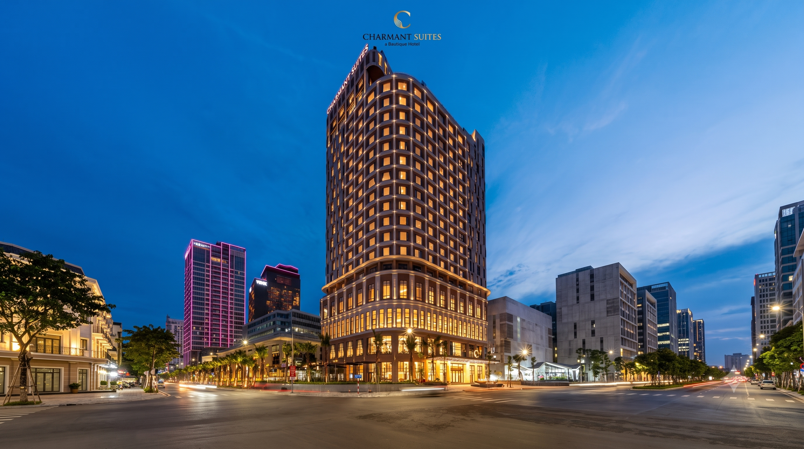
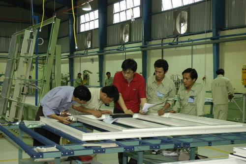
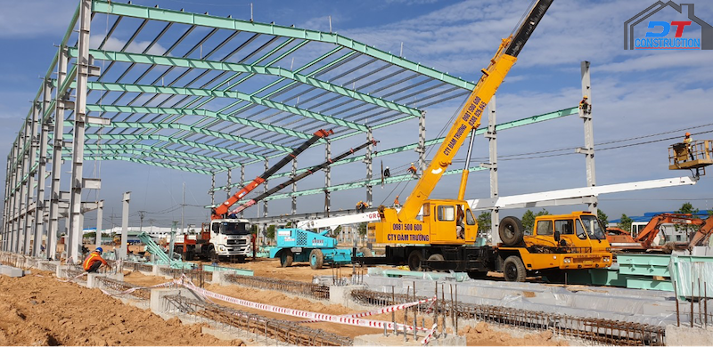

Thành Phú là nhà thầu thi công giàu kinh nghiệm trong việc triển khai trọn gói từ phần thô đến hoàn thiện các khối công trình dân dụng (tòa nhà cao tầng, văn phòng, chung cư, khách sạn, biệt thự) và công trình công nghiệp (nhà xưởng, nhà kho logistics, khu chế xuất).
Bên cạnh xây mới, chúng tôi cung cấp giải pháp sửa chữa, nâng cấp và gia cố kết cấu an toàn cho các công trình đang vận hành, đảm bảo đáp ứng tiến độ khắt khe và tiêu chuẩn chất lượng cao nhất.
Thi công móng cọc sâu, hầm ngầm, khung bê tông cốt thép, hoàn thiện nội ngoại thất cao cấp.
Khung nhà thép tiền chế vượt nhịp lớn, sàn bê tông siêu phẳng kháng hóa chất, nhà xưởng LEED/GMP.

Thành Phú sở hữu năng lực vượt trội trong việc thi công mạng lưới giao thông đường bộ, công trình cầu bê tông cốt thép và hạ tầng kỹ thuật đồng bộ phục vụ các khu đô thị và khu công nghiệp quy mô lớn.
Thi công hoàn chỉnh hệ thống mương cống ngầm, cống hộp đúc sẵn, hệ thống xử lý cấp nước sạch sinh hoạt và thu gom thoát nước mưa, nước thải chống ngập úng đô thị theo quy chuẩn môi trường.
San nền mặt bằng, thảm bê tông nhựa nóng asphalt, thi công mố trụ và dầm cầu chịu tải trọng lớn.
Mạng lưới đường ống HDPE cấp nước sạch, hào kỹ thuật tuynel ngầm, trạm bơm tiêu thoát nước tự động.
Với xưởng cơ khí và dây chuyền gia công hiện đại, Thành Phú trực tiếp sản xuất các hệ cửa nhựa lõi thép gia cường uPVC định hình chất lượng cao, có độ bền cơ học vượt trội, khả năng cách âm, cách nhiệt hoàn hảo.
Đồng thời, chúng tôi gia công và thi công lắp đặt trọn gói hệ thống vách kính mặt dựng facade (Spider, Unitized, Stick) và cửa đi, cửa sổ nhôm kính cao cấp cho các dự án cao tầng và biệt thự sang trọng.
Profile uPVC nhập khẩu, thanh gia cường thép mạ kẽm chống gỉ, phụ kiện kim khí đồng bộ chống xệ.
Kính hộp Low-E dán an toàn cản nhiệt, khung nhôm sơn tĩnh điện chống ăn mòn muối biển bảo hành dài hạn.

Thành Phú cung cấp và cho thuê đội ngũ máy móc thiết bị cơ giới thi công chuyên dụng hiện đại: cẩu tháp, máy đào, xe lu rung, máy bơm bê tông tĩnh, giàn giáo coppha nhôm/thép đạt chứng chỉ kiểm định an toàn nghiêm ngặt.
Song song đó, công ty là đối tác phân phối uy tín các loại vật liệu xây dựng thô và hoàn thiện chất lượng cao (thép xây dựng, xi măng, cát đá, gạch xây, sơn bả, phụ gia bê tông) với nguồn gốc xuất xứ minh bạch và giá thành cạnh tranh nhất thị trường.
Cẩu tháp, vận thăng lồng, xe cơ giới lu lèn, trạm trộn bê tông tươi bảo dưỡng định kỳ.
Sắt thép thương hiệu hàng đầu (Hòa Phát, Pomina), xi măng mác cao, phụ gia chống thấm Sika.
